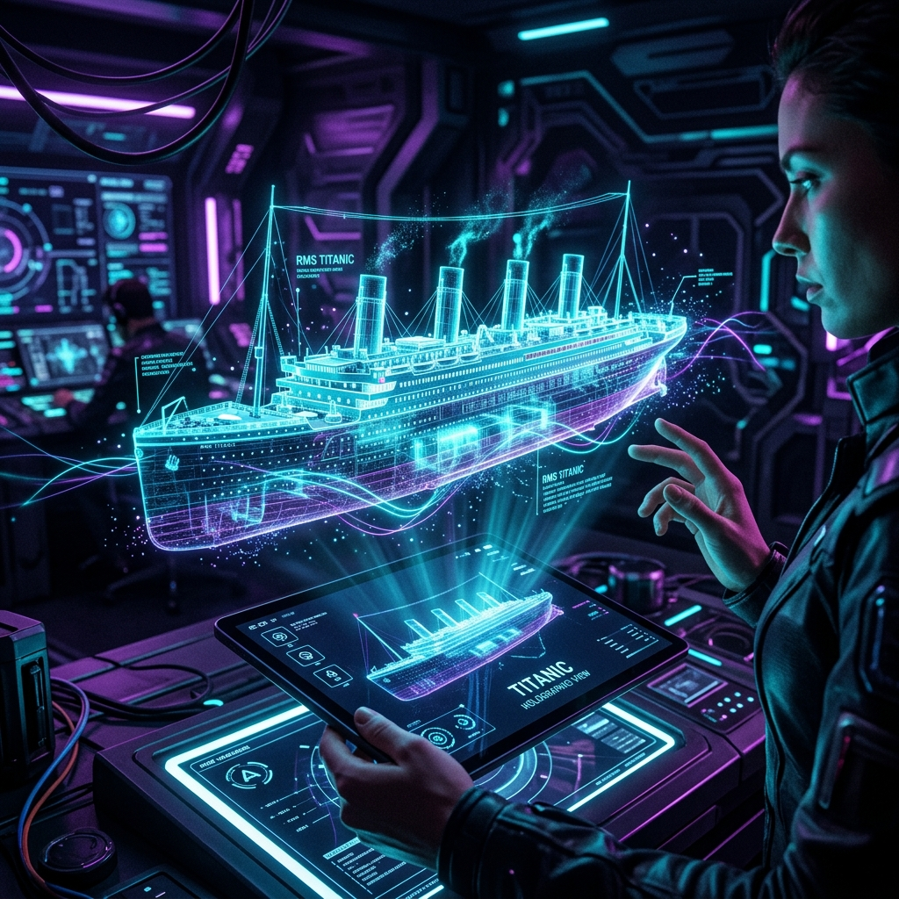

Modelo de Predicción de Supervivencia
RMS Titanic
Un proyecto de Machine Learning Supervisado de clasificación que evalúa la probabilidad de supervivencia en el naufragio de 1912.

Visualización Holográfica e Inteligencia Artificial
Para maximizar el impacto visual de este proyecto predictivo, integramos una interfaz de simulación holográfica que representa el RMS Titanic en tres dimensiones dentro del espacio físico del usuario.
A través de esta recreación, los docentes y estudiantes pueden manipular variables demográficas directamente sobre la estructura digital del buque, auditando las zonas de camarotes y botes salvavidas con predicciones probabilísticas proyectadas en tiempo real.
📥 Descargar Reporte APA (.docx)Ciclo de Vida del Proyecto — CRISP-ML(Q)
Entendimiento del Negocio
Definición del problema histórico y planteamiento de objetivos SMART. Formulación de la pregunta orientada a predecir la supervivencia binaria en base al perfil demográfico.
Entendimiento de Datos
Análisis del manifiesto de 891 pasajeros (`titanic.csv`). Exploración estadística preliminar y detección de valores nulos críticos en edad, cabina y puerto de embarque.
Preparación de Datos (ETL)
Imputación inteligente de la edad según la mediana agrupada. Ingeniería de características (creación de `FamilySize` e `IsAlone`). Codificación One-Hot y escalamiento estándar de variables continuas.
Modelado
Entrenamiento simultáneo de 4 algoritmos de clasificación supervisada en Scikit-learn: Regresión Logística, Árbol de Decisión, KNN y Random Forest.
Evaluación
Validación de modelos sobre el 30% del conjunto de prueba. Extracción de métricas de precisión (Accuracy > 80%), curvas ROC e importancia de variables.
Despliegue y Monitoreo
Implementación del motor en JavaScript cliente dentro del simulador web local y despliegue del panel de control interactivo mediante Python Streamlit.
Matriz de Acceso a los Entregables
| Entregable | Ubicación / Link | Formato | Descripción |
|---|---|---|---|
| Cuaderno de ML | notebook.ipynb | Jupyter Notebook | Pipeline completo de ETL, EDA y entrenamiento de los 4 clasificadores supervisados. |
| Simulador Web | app/index.html | HTML5 / CSS / JS | Simulación interactiva con sliders e inferencia cliente en tiempo real. |
| Dashboard Streamlit | streamlit_app.py | Python App | Panel analítico en Streamlit con gráficos interactivos y métricas comparativas. |
| Documento de Investigación | Documento_Titanic.docx | DOCX (APA 7) | Reporte formal de la investigación con portada, DOFA y referencias en formato Word. |
| Reporte Markdown | Documento_Titanic.md | Markdown | Texto completo estructurado en formato Markdown. |
| Requerimientos de Sistema | requirements.txt | TXT | Dependencias de Python recomendadas para ejecutar el entorno local. |
| Repesitorio del Proyecto | Ver Repositorio GitHub | GitHub Repo | Enlace representativo del repositorio Git del proyecto para control de cambios. |